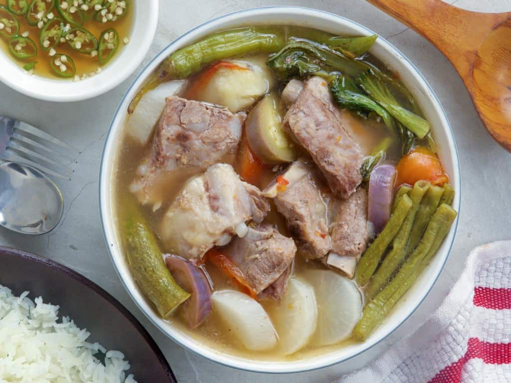

Pork Sinigang Recipe

Description
Pork Sinigang is the ultimate comfort food! Made with pork ribs, vegetables, and tamarind-flavored broth,
it’s hearty and delicious on its own or served with steamed rice.
Ingredients
- 2 pounds pork spare ribs, cut into 2-inch pieces
- 8 cups water
- 2 large tomatoes, quartered
- 1 medium onion, peeled and quartered
- 2 tablespoons fish sauce
- 6 pieces gabi, (peeled and halved depending on size)
- 1 piece 6-inch size radish, peeled and sliced to 1/2-inch thick half-rounds
- 2 pieces finger green chilies
- 1/2 bunch string beans, ends trimmed and cut into 3-inch lengths
- 1 piece eggplant, ends trimmed and sliced to 1/2-inch thick half-rounds
- 6 pieces okra, ends trimmed
- 15 pieces large tamarind
- 1 bunch bok choy or pechay, ends trimmed and separated into leaves
- Salt
Directions
Preparing the Tamarind Extract
-
Wash tamarind and place in a saucepan with 1 cup water. Bring to a boil and cook until soft and outer
skins begin to burst.
- With a fork, mash tamarinds.
-
In a fine-mesh strainer set over a bowl, pour tamarind and liquid. Continue to mash with a fork, returning
some of the liquid into the strainer once or twice, to fully extract the juice. Discard seeds and skins.
Cooking Procedure
- Rinse pork ribs and drain well.
-
In a pot over medium heat, combine pork and enough water to cover. Bring to a boil, skimming scum that
accumulates on top.
-
Once broth clears, add tomatoes, onion, and fish sauce. Lower heat and simmer for about 1 to 1 1/2 hours
or until meat is tender, adding more water as necessary to maintain about 8 cups.
- Add gabi and cook for about 4 to 6 minutes or until tender.
- Add the chili peppers and radish. Continue to simmer for about 2 to 3 minutes.
- Add the string beans. Continue to cook for about 2 minutes.
- Add eggplant and okra and cook for another 1 to 2 minutes.
- Pour tamarind juice into the pot of sinigang.
- Season with salt to taste.
- Add bok choy and continue to cook for about 1 minute. Serve hot.
Back to Main Page